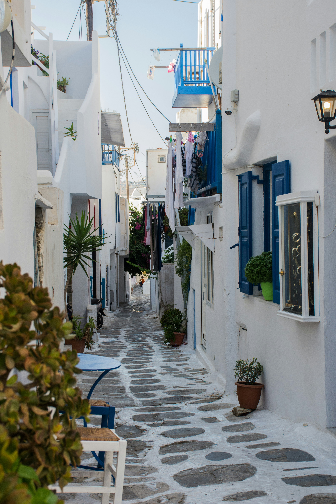
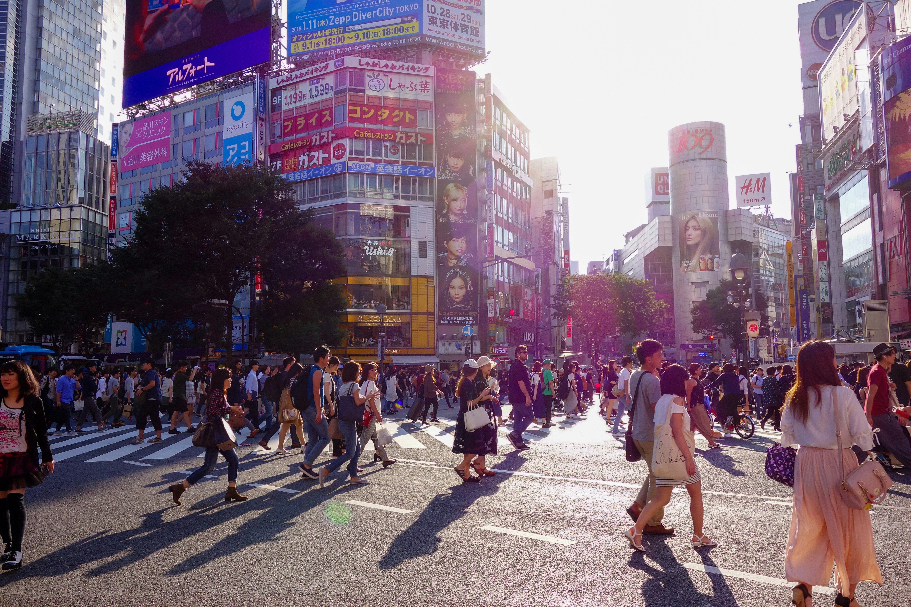

My Gaze Archive
Midnight Sun
Born This Way
Say So
Why
Say So
(05)
Doja Cat의 노래 'Say So'에서 영감받은 사진들 — 로망 속의 스트릿들.

Whitewashed Alley
Hector J Rivas · Unsplash
Theater Marquee
Kostiantyn Trundaiev · Unsplash
Hanbok at the Gate
Mos Sukjaroenkraisri · Unsplash
Snowfall Street
Yiran Ding · Unsplash

Scramble Crossing
Zion C · Unsplash
Previous
Born This Way
Next
Why these
Close
Prev
Next